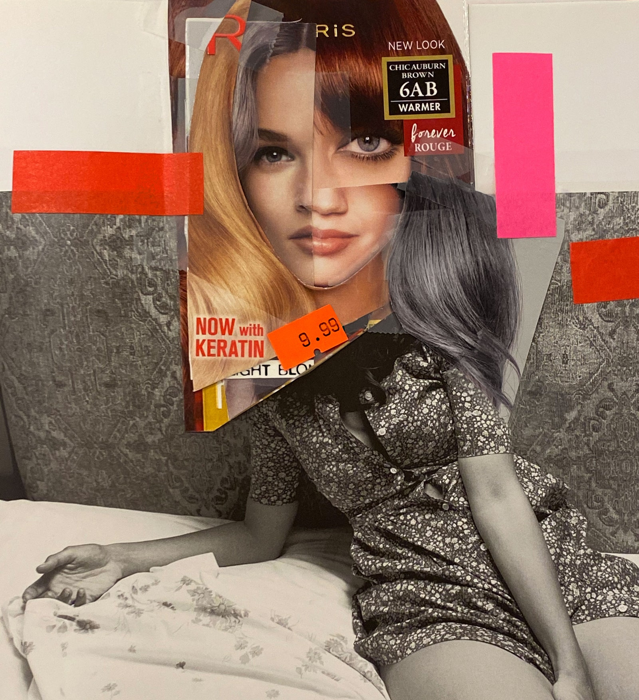

How long does it take to make or break a habit? A decade ago Phillippa Lally, Ph.D.,a researcher at University College London, led a major study showing that people need, on average, 66 days to change their ways. I was reminded of this 60-ish days into my own pandemic-induced seclusion, after fleeing my small apartment in Manhattan to join friends at their home in upstate New York. As the novelty of sheltering in place wore off (I, too, grew sick of baking and binge-watching) and I adapted to my newly rural lifestyle, I became preoccupied with the question of who, exactly, I would be if and when I returned to my “normal” life—and beyond that what, exactly, I’d look like.